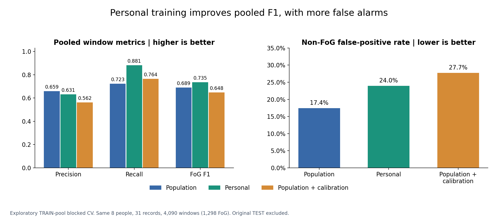
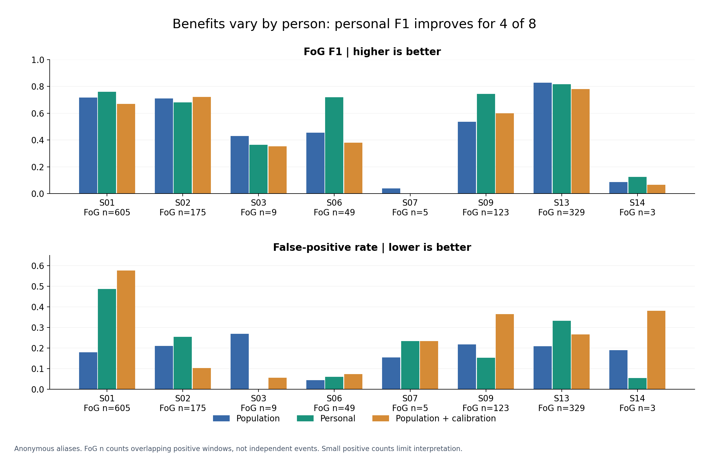
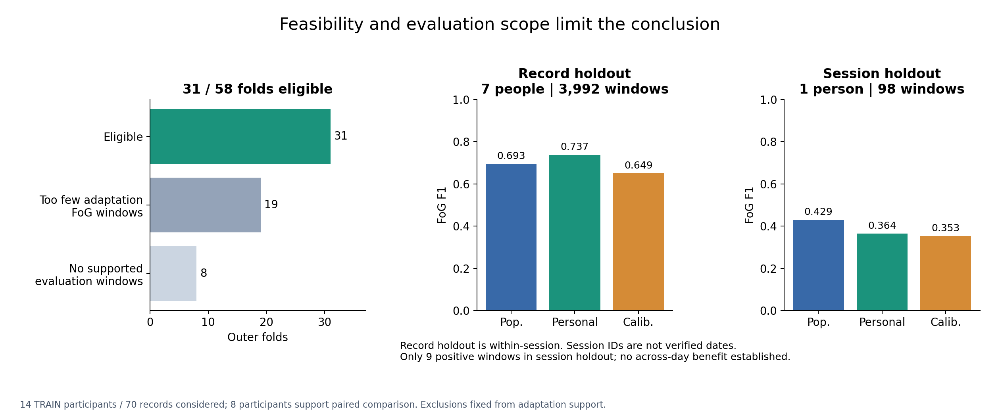

FoGGuard · Optional A1 research · 30 October 2026
Does personal training improve FoG detection?
It improves pooled F1 in this experiment, with more false alarms and uneven benefits across people.
Scope: exploratory blocked cross-validation within the original TRAIN pool.
14 participants / 70 records considered. The paired comparison covers 8 participants / 31 records / 4,090 overlapping windows, including 1,298 FoG windows. Original development and TEST participants are excluded. These scores cannot be compared directly with the original locked TEST F1.
Implementation
All strategies use the existing bilateral gyro representation: 120 samples at 60 Hz, step 30, 66 features, and a 300-tree random forest. Population RF fits other TRAIN participants, excluding the target. Personal RF fits target-person adaptation records only. Both use fixed threshold 0.23. Population + calibration retains population weights and chooses a threshold on the target adaptation records alone (grid 0.05–0.95).
Participants with multiple sessions use session holdout; others use whole-record holdout. Whole, disjoint records define adaptation and evaluation; windows never cross that boundary. At least 10 positive and 10 negative adaptation windows are required; eligibility is never based on held-out labels or scores. Personal fitting and threshold calibration use the same adaptation-label budget, in different ways.
Threshold 0.23 is inherited from prior TRAIN-based design. Target exclusion refers to the current population classifier fit; this is not a newly isolated benchmark with no prior knowledge of the TRAIN pool.

Pooled F1 rises 0.689 to 0.735; precision falls and false-positive rate rises 17.4% to 24.0%. Calibration does not improve F1.
PNG · SVG

Four participants improve and four worsen. Participant-macro recall falls from 0.658 to 0.621 despite the higher pooled recall.
PNG · SVG

Six of fourteen participants cannot support the paired personal study. Across-session evidence is restricted to one person and nine positive windows.
PNG · SVG
Exact aggregate results
Participant macro gives each person equal weight. Pooled metrics give each window equal weight. False alarm duration uses causal prediction availability, held for at most 0.5 s; its denominator is the same 2,097.78 observed seconds. It is not alarms per walking minute or measured clinical burden.
Interpretation and limits
Personal training is a promising optional adaptation strategy, not a universal replacement. The result does not prove that inter-person gait variation caused the original errors. Model data volume, same-session similarity and the fixed operating point also differ. No threshold retuning followed evaluation.
Record holdout is within-session; session IDs are grouping keys, not verified dates. Overlapping windows are not independent subjects. Only one participant supports session holdout, where personal F1 is lower. A prospective across-day or new-person trial is still needed for deployment claims.
Five participants with no positive supported windows are retained as separate population-only controls (CSV below). FoG recall/F1 are not evaluable for those controls; lack of a positive supported window does not establish that a person never freezes.
The original three delivered methods, weights, locked TEST results, A2 fusion and A-group showcase are preserved. This study does not replace the main pipeline.